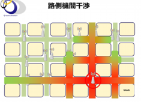
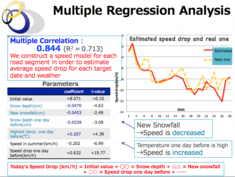

Future Advanced ITS Technology
Optimal Allocation of Roadside Devices
In the next-generation transportation system, a base station for roadside communication (roadside device) will be installed at the intersection and a mechanism will be built to support safe driving. When a large number of roadside devices are installed in the urban space, interference control of wireless communication among those base stations becomes a problem. The research group proposes a resource allocation technology that achieves high resource utilization efficiency without requiring interference measurement among such base stations in an environment where radio base stations are densely installed and may be expanded in the future. In the proposed method, by segmenting the region into cells and estimating the ordered inter-cell

{kind=link}
interference relationship irrespective of the existence of the base station, it becomes unnecessary to measure the interference relation and an optimum resource allocation algorithm using regularity has been developed.
Cooperative Technology for Grasping the Existence of Nearby Vehicles
Distribution of traffic information and safe driving support information using road-to-vehicle DSRC (narrow area communication) has become common. In addition, vehicles capable of detecting in the vicinity of the own vehicle are increasing by using a peripheral recognition device aiming for autonomous safety of vehicles such as in-vehicle radar and cameras. Therefore, assuming an environment in which the GPS receivers, periphery recognition devices such as omnidirectional radars and omnidirectional cameras, and onboard vehicles holding DSRC compatible devices exist at a certain ratio, the current position information of the own vehicle measured from the GPS and the detection result of the peripheral vehicle recognition device, calculates the relative position information of the surrounding vehicles, shares it among the mounted vehicles by inter-vehicle communication, and integrates a plurality of position information of each mounted vehicle. We are developing technologies to grasp the existence of nearby vehicles including vehicles that can not be grasped by devices.
Speed Model for Snowy Roads using Weather Information
In snowy cities where a lot of snow accumulates in winter, snow accumulation has a big influence on traffic flow. In this study, we collect road traffic information, weather data such as snowfall amount in Sapporo city which is one of the world snow accumulating cities, and analyze these data by multiple regression analysis, which is accompanied by change of weather condition. We propose a method to estimate fluctuation of road traffic speed with high accuracy. By applying and analyzing the proposed method for each route, it is possible to estimate the influence of the change of the weather condition on the decrease of the traffic speed of the snow road with high accuracy. Also, we can use the proposed method for estimating the commuting time due to differences in weather conditions.

{kind=link}
[Selected Publications]
M. Elhamshary, M. Youssef, A. Uchiyama, H. Yamaguchi and T. Higashino: "TransitLabel: A Crowd-Sensing System for Automatic Labeling of Transit Stations Semantics", Proceedings of the 14th Annual International Conference on Mobile Systems, Applications, and Services (MobiSys 2016), pp.193-206, 2016.
Y. Yamada, A. Uchiyama, A. Hiromori, H. Yamaguchi and T. Higashino: "Travel Estimation using Control Signal Records in Cellular Networks and Geographical Information", Proceedings of the 9th IFIP Wireless and Mobile Networking Conference (WMNC 2016), pp.138-144, 2016.
A. Fujita, H. Yamaguchi, T. Higashino and M. Takai: "A Study on Identification of Laser-tracked Vehicles using V2V-based Velocity Information", Proceedings of the 17th IEEE International Symposium on A World of Wireless, Mobile and Multimedia Networks (WoWMoM 2016), pp.1-6, 2016.
H. Yamaguchi, A. Hiromori, T. Higashino, S. Umehara, H. Urayama, M. Yamada, T. Maeno, S. Kaneda and M. Takai: "Scalable and Robust Channel Allocation for Densely-Deployed Urban Wireless Stations", Performance Evaluation Journal (Elsevier), Vol. 87, pp.74-91, 2015.
R. Tanimura, A. Hiromori, T. Umedu, H. Yamaguchi and T. Higashino : "Prediction of Deceleration Amount of Vehicle Speed in Snowy Urban Roads Using Weather Information and Traffic Data", Proceedings of the 2015 IEEE 18th International Conference on Intelligent Transportation Systems (ITSC 2015), pp.2268-2273, 2015.
T. Satoh, A. Hiromori, H. Yamaguchi and T. Higashino: "A novel estimation method of road condition for pedestrian navigation", Proceedings of the 2015 IEEE International Conference on Pervasive Computing and Communication Workshops (PerCom Workshops 2015), pp.427-432, 2015.
S. Kajita, H. Yamaguchi, T. Higashino, H. Urayama, M. Yamada and M. Takai: "Throughput and Delay Estimator for 2.4GHz WiFi APs: A Machine Learning-based Approach", Proc. of 8th IFIP WMNC2015, pp. 223-226, 2015.
S. Kajita, H. Yamaguchi, T. Higashino, S. Umehara, F. Saitou, H. Urayama, M. Yamada, T. Maeno, S. Kaneda, M. Takai: "A Channel Selection Strategy for WLAN in Urban Areas by Regression Analysis", Proc. of IEEE WiMob2014, pp. 646-651,
2014.
T. Tange, A. Hiromori, H. Yamaguchi, T. Higashino and T. Umedu: "An analysis model of queue length fluctuation at signals using vehicle trajectories", Proceedings of the International Conference on Connected Vehicles and Expo (ICCVE 2014), pp.577-583, 2014.
H. Yamaguchi, A. Hiromori, T. Higashino, S. Umehara, H. Urayama, M. Yamada, T. Maeno, S. Kaneda and M. Takai: : "A Novel Scheduling Algorithm for Densely-Deployed Wireless Stations in Urban Areas”, Proc. of 16th ACM Int. Conf. on Modeling, Analysis and Simulation of Wireless and Mobile Systems (MSWiM2013), pp.317-326, 2013. (Best Paper Nominated)
T. Umedu, Y. Togashi and T. Higashino : "A Self-learning Traffic Signal Control Method for CO2 Reduction Using Prediction of Vehicle Arrival", Proc. of 15th IEEE Intelligent Transportation Systems Conference (ITSC 2012), 2012.
S. Fujii, A. Fujita, T. Umedu, H. Yamaguchi, T. Higashino, S. Kaneda and M. Takai : "Cooperative Vehicle Positioning via V2V Communications and Onboard Sensors", Proc. of 4th Int. Symp. on Wireless Vehicular Communications (WiVeC2011), CD-ROM, 2011.
T. Umedu, K. Isu, T. Higashino and C. K. Toh : "An Inter-vehicular Communication Protocol for Distributed Detection of Dangerous Vehicles", IEEE Transactions on Vehicular Technology, Vol.59, No.2, pp. 627-637, 2010.